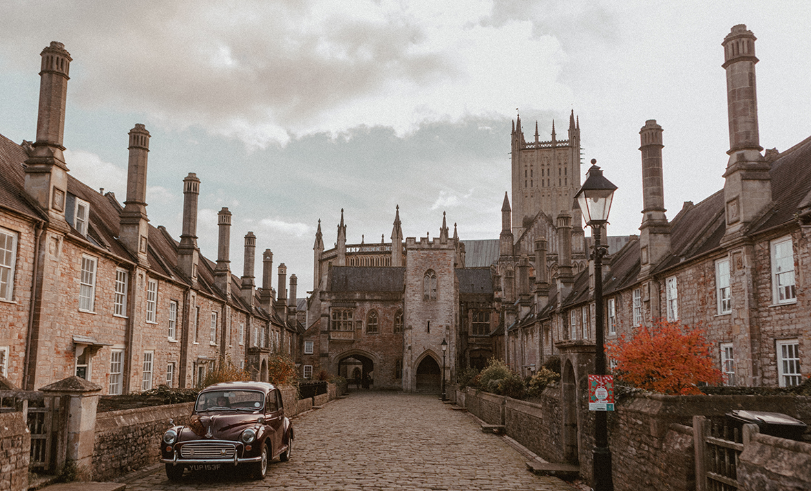

Bowerbirds - The Boweress
Classic with a touch of playfulness
19 July, 2018
How did your blog begin and where did your love affair with photography come from?
It was a very gradual and natural progression. My dad has worked as a wildlife photographer (and blogger funnily enough). He used to lend me his camera gear when I was around thirteen, and I began taking lifestyle and storytelling photos for fun. Three years later, Instagram was released. I saved up my income from my part time job to buy an iPhone in order to get involved. After another three years my Instagram account had grown to around 35k, and I began blogging. Finally, after a further three years we find ourselves in 2018 and I’m working as an Instagrammer/blogger full time.
You have such a delicate and calming approach to making content. How did growing up in the UK shape the aesthetic you have?
Most of the places I feature are located in the South West, within a few hours of where I live. They’re often places my family used to take me as a child, but I was too young to really appreciate them. I now find myself revisiting and almost rediscovering these destinations as an adult. You see things completely differently. I love this experience, as it adds a layer of sentimental value to most of the locations I shoot in.
Your classic aesthetic reminds me of so many English period dramas, are you a fan of these stories and does this part of English history contribute to your personal style?
I love Wuthering Heights, Silas Marner, Tess of the d’Urbervilles, and War Horse. I also love books that are a bit more whimsical, like Alice in Wonderland. I like to think there is a classic and historical theme in my photos, plus a little bit of whimsy, and I suppose those books sum that up.
How long have you had your Morris Minor and where did the name Maurice come from? It’s a nice play on words.
I’ve had Maurice for around a year now, and that was preceded by many years of want. It wasn’t until I graduated and started working that I could finally afford a Morris, so that was a very exciting moment. My boyfriend named the car Maurice, he’s named after Belle’s father in Beauty and The Beast. I actually had my heart set on naming the car Jemima (as in Jemima Puddleduck), but when it arrived it really didn’t look like a Jemima!
Your platforms are not all pretty pictures though as you tackle topics such as mental health. How has sharing your experiences helped you and what has been the reaction/ feedback from your community?
I’ve found Instagram to be absolutely amazing when it comes to talking about mental health. There is an honesty and positivity there that doesn’t seem to be present on other social media platforms. I recently shared a post about how I have learned to manage anxiety, and I was moved to tears by the response. Hundreds of people had shared their stories and coping mechanisms in comments and messages. Some had even said the post changed their life. For me that’s the most amazing thing I could wish for in terms of what I want to achieve with my account. Sharing important topics and having a positive impact on people and the world.
The Boweress is concerned with space and how different environments affect and contribute to our own and others wellbeing. What are some of your ‘go to’ places for self-care and describe how your surroundings affect/ change you as a person…in other words, where is your ‘bowery’?
My go to space is a woodland about 30 minutes away from my house. The air is fresh and cold and you feel an instant sense of calm on arrival. My boyfriend and I walk there when we need a break or creative inspiration. I also visit Castle Combe a lot when it’s quiet during the week. There is just something about it that makes me feel calm and inspired.
What is beauty to you?
Authenticity. A person who is true to themselves and others, and finds happiness in the non-material. Nature is also synonymous with beauty to me.
What are some things that you do outside of monalogue?
I love walking and exploring new places with my boyfriend and my dog. Although this often results in me taking photos for monalogue. I think the account is so closely related to what I do in ‘real life’ that the two are hard to separate. We also love going for dinner in the local pub, they are dog friendly too!
We are taken through terrific and magical journeys through your site, take us through your perfect day.
It’s funny, what feels like the perfect day can sometimes be a day when my photos aren’t good enough to make the Instagram feed. Sometimes I can have a day that I really don’t enjoy, and the photos will be amongst my favourites. If I am exploring a village, park or garden at a slow pace, and I am with my boyfriend and have a camera at hand, that’s my perfect day. Especially if we stop for a nice meal.
What is your favourite season and why?
I love autumn, when there is a new burst of colour and it’s still warm enough to explore comfortably. The light is often better for photography too.
If you could photograph anywhere in the world where would it be?
Definitely some of the rural villages in France, they are number one on my bucket list.
Follow Ramona @monalogue or visit her blog www.monalogue.co.uk
